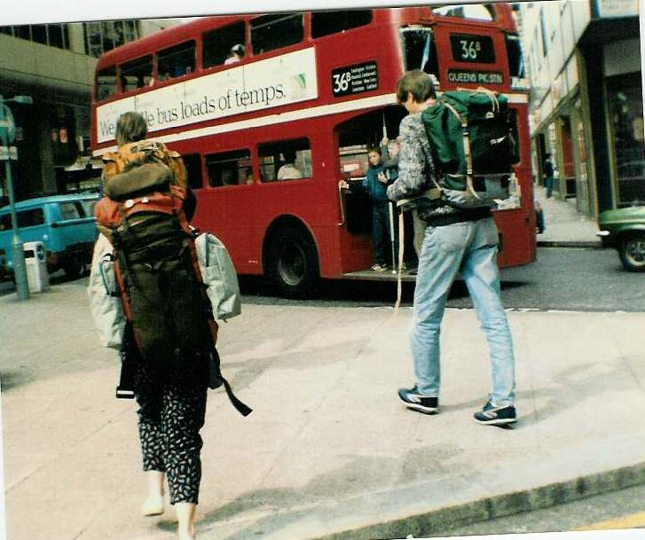

Inter Rail 1986 Day 1
Saturday 23rd August 1986

The alarm went off at 6.30am (Mum was insistent that it needed to be that early) but I didn't drag myself out of bed until 7.05am. Did a final bit of packing and had some bacon butties for breakfast.
The train from Swansea was 5 minutes late getting into Cardiff. Spotted Jon hanging out of the window of one of the carriages. The journey to London Paddington was largely uneventful. Crossed over to London Victoria on the underground and arrived with 10 minutes to spare before the boat train left.
Failed miserably to meet up with Roger. He was inside the Travel Centre whilst we were outside and as a result missed the planned 11.10am train.
Used the extra time before the next train to get the tickets sorted out and had 21/2 pints of Wethered plus shepherds pie and beans.
We eventually caught the 14.30pm train down to Dover and then on the Sealink ferry over to Calais. I've never seen a worse mess or chaos than the foot passengers attempting to get through 1 very small staircase and gangplank.
It took us as long to get off the boat as the hovercraft does to cross the channel! The boat train to Paris Gare de Nord was 20 minutes late as a result.
On arrival there was a bit of a dither about whether we had time to cross Paris using the Metro. They don't go out of their way to give you any helpful maps before you have to make a big direction decision.
We knew which station we wanted but you have to know the station at the end of the line in the direction you're going in order to know which line to pick.
We ended up trying to read over the shoulder of a French guy who had a map but all misread it. Having bought our tickets, we thus charged into the wrong Metro line and had to be told which line and which direction we were looking for.
The trip across Paris to Montparnasse station took approximately half and hour and included an outdoor crossing of the Seine. There was another dither on arrival as there were three different trains to choose from.
We ended up on the right one eventually, involving a 6.00am change at Bordeaux St. Jean. The straight through train was a sleeper only.
Our train left on time at 23.59. We managed to get a compartment to ourselves. Eli and I got to sleep on the seats whilst Jon slept on the floor and Roger slept up in the luggage rack.